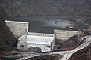
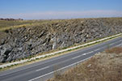
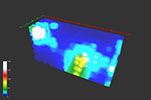
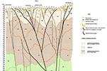
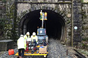
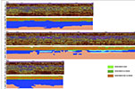
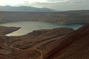
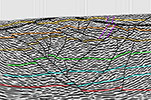

Servicios geofísicos
Nuestra empresa ofrece servicios, tanto tecnicos como de asesoría, en ámbito de la geofísica aplicada. Nuestro trabajo se utiliza en diferentes sectores, desde la ingeniería civil a la exploración de recursos naturales. La aplicación de la geofísica proporciona recursos adicionales para la resolución de problemas, así como una reducción de los costes generales en los proyectos.
Geotecnía
En los proyectos geotécnicos la aplicación de diferentes técnicas geofísicas son útiles en:
Estudio de túneles

Realizamos estudios estructurales para túneles. Tanto de los emboquilles como del trazado, definiendo la red de fallas y fracturas y la disposición de las diferentes litologías existentes. Para diseños a gran profundidad utilizando la sísmica de reflexión de alta resolución
Proyectos de presas
En presas estudiamos diseños de viabilidad, las cimentaciones, zonas de fugas en los embalses, zonas de prestamos, deslizamientos o desmontes
Obras lineales
En carreteras o lineas férreas se estudian desmontes y el terreno de las estructuras asociadas
Diseño de cimentaciones

Se realizan servicios para construcciones que requieran el conocimiento de los módulos de elasticidad dinámicos, niveles freáticos e indices de ripabilidad
Investigaciones geológicas
Se realiza la definición de estructuras geológicas, disposición de las diferentes litologías existentes o medidas de resistividad para Tomas de tierra
Geotermia
La aplicación de diferentes técnicas geofísicas para geotermia son útiles en:
Aguas subterráneas

Realizamos estudios para la determinación del gradiente de flujo de aguas termales
Yacimientos profundos
Nuestros servicios se aplican en la caracterización estructural de fuentes termales en zonas profundas.
Hidrogeología
En hidrogeología el uso de diferentes técnicas geofísicas son útiles en:
Estudio de acuíferos

Nuestros servicios son utilizados en el reconocimiento de acuíferos; para determinar su ubicación, su caracterización y la calidad del agua (posible contaminación)
Estudios estructurales

La aplicaciones geofísicas permiten la definición de red de fracturas y fallas, para la extracción de recursos hidricos para plantas embotelladoras, termales etc
Arqueología
En investigaciones arqueológicas, la aplicación de diferentes técnicas geofísicas son útiles en:
Áreas urbanas
Servimos aplicaciones para la detección y cartografía de cimentaciones antiguas. Y detección de cuerpos y útiles
Áreas rurales

Utilizamos nuestras técnicas en enterramientos funerarios y búsqueda de objetos
Auscultación
A la hora de auscultar, la aplicación de diferentes técnicas geofísicas son útiles en:
Estudio en túneles
Ofrecemos aplicaciones para la revisión del estado del revestimiento y trasdos, en fase de construcción y mantenimiento
Servicios enterrados

Usamos diversas técnicas en la busqueda de oleoductos, gaseoductos, y tuberias. Y cimentaciones enterradas
Estudios en obras lineales
Se auscultan carreteras y lineas férreas para la detección de cavidades. Y como control de calidad de compactación en obra
Estudios de contaminación

Se realizan investigaciones de suelos contaminados, fugas de hidrocarburos, vertidos no controlados, etc
Estudios en aeropuertos

Para el solado de las pistas y estacionamientos se hacen revisiones, como prevención de hundimientos
Estudios en presas

Se hacen controles de fugas en presas de materiales sueltos.
Minería
Para mineria el uso de diferentes técnicas geofísicas son útiles en:
Estudio de canteras
Aplicamos nuestras técnicas en la delimitación de canteras y la separación entre zonas estériles de las que presentan posibilidades de contener yacimientos económicamente explotables
Estudios estructurales

nuestros servicios se enfocan en la definición de la estructura geológica del subsuelo, en zonas subceptibles de explotación.
Mapeo de fallas y fracturas
Detección de cuerpos minerales

Uso en la búsqueda de cuerpos minerales conductores, yacimientos de sulfuros
Detección de masa minerales que por contraste de resistividad.
Búsqueda y prospección de yacimientos de minerales (diapiros salinos, sulfuros, yacimientos
de petróleo y gas)
Medios acuáticos
En los proyectos acuaticos la aplicación de diferentes técnicas geofísicas son útiles en:
Obras portuarias y fluviales

Estamos inmersos en estudios para dragados, instalaciones submarinas (emisarios, arrecifes artificiales, etc.), control de obras, regeneración de playas, trabajos de arqueología submarina, colmatación de pantanos, estudios medioambientales en ríos, etc